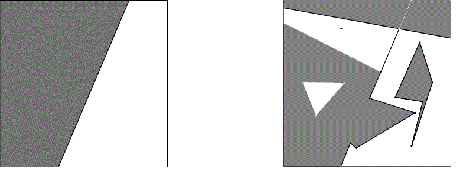

|
CGAL 6.1.3 - 2D Boolean Operations on Nef Polygons
|
Loading...
Searching...
No Matches
|
CGAL 6.1.3 - 2D Boolean Operations on Nef Polygons
|
When working with polygonal and polyhedral sets, the mathematical model determines the kind of point set that can be represented. Nef polyhedra are the most general rectilinear polyhedral model.
Topological simpler models that are contained in the domain of Nef polyhedra are:
A planar Nef polyhedron is any set that can be obtained from a finite set of open halfspaces by set complement and set intersection operations. Due to the fact that all other binary set operations like union, difference and symmetric difference can be reduced to intersection and complement calculations, Nef polyhedra are also closed under those operations. Apart from the set complement operation there are more topological unary set operations that are closed in the domain of Nef polyhedra. Given a Nef polyhedron one can determine its interior, its boundary, and its closure, and also composed operations like regularization (defined to be the closure of the interior or a point set).

Figure 18.1 Two Nef polyhedra in the plane. A closed halfspace on the left and a complex polyhedron on the right. Note that the points on the squared boundary are at infinity.
Following the above definition, the data type Nef_polyhedron_2<T> allows construction of elementary Nef polyhedra and the binary and unary composition by the mentioned set operations.
In the following examples skip the typedefs at the beginning at first and take the types Point and Line to be models of the standard two-dimensional CGAL kernel (Point_2<K> and Line_2<K>). Their user interface is thus defined in the corresponding reference pages.
File Nef_2/nef_2_construction.cpp
Planar halfspaces (as used in the definition) are modeled by oriented lines. In the previous example N1 is the Nef polyhedron representing the full plane, N2 is the closed halfspace left of the oriented line with equation \( 2x + 4y + 2 = 0\) including the line, N3 is the complement of N2 and therefore it must hold that \( N2 \cup N3 = N1\).
Additionally one can construct Nef polyhedra from iterator ranges that hold simple polygonal chains. In the example N4 is the triangle spanned by the vertices \( (0,0)\), \( (10,10)\), \( (-20,15)\). Note that the construction from a simple polygonal chain has several cases and preconditions that are described in the reference manual page of Nef_polyhedron_2<T>. The operator<= in the last assertion is a subset-or-equal comparison of two polyhedra.
Nef polyhedra have input and output operators that allows one to output them via streams and read them from streams. Graphical output is currently possible. For an elaborate example see the demo programs in the directory demo/Nef_2.
By recursively composing binary and unary operations one can end with a very complex rectilinear structure. To explore that structure there is a data type Nef_polyhedron_2::Explorer that allows read-only exploration of the rectilinear structure. To understand its usability we need more knowledge about the representation of Nef polyhedra.
The rectilinear structure underlying a Nef polyhedron is stored in a selective plane map. Plane map here means a straightline embedded bidirected graph with face objects such that each point in the plane can be uniquely assigned to an object (vertex, edge, face) of the planar subdivision defined by the graph. Selective means that each object (vertex, edge, face) has a Boolean value associated with it to indicate set inclusion or exclusion.
The plane map is defined by the interface data type Nef_polyhedron_2::Topological_explorer. Embedding the vertices by standard affine points does not suffice to model the unboundedness of halfspaces and ray-like structures. Therefore the planar subdivision is bounded symbolically by an axis-parallel square box of infimaximal size centered at the origin of our coordinate system. All structures extending to infinity are pruned by the box. Lines and rays have symbolic endpoints on the box. Faces are circularly closed. Infimaximal here means that its geometric extend is always large enough (but finite for our intuition). Assume you approach the box with an affine point, then this point is always inside the box. The same holds for straight lines; they always intersect the box. There are more accurate notions of "large enough", but the previous propositions are enough at this point. Due to the fact that the infimaximal box is included in the plane map, the vertices and edges are partitioned with respect to this box.
Vertices inside the box are called standard vertices and they are embedded by affine points of type Explorer::Point. Vertices on the box are called non-standard vertices and they get their embedding where a ray intersects the box (their embedding is defined by an object of type Explorer::Ray). By their straightline embedding, edges represent either segments, rays, lines, or box segments depending on the character of their source and target vertices.
During exploration, box objects can be tracked down by the interface of Nef_polyhedron_2::Explorer that is derived from Nef_polyhedron_2::Topological_explorer and adds just the box exploration functionality to the interface of the latter. In the following code fragment we iterate over all vertices of a Nef polyhedron and check whether their embedding is an affine point or a point on the infimaximal frame.
Note that box edges only serve as boundary edges (combinatorically) to close the faces that extend to infinity (geometrically). Their status can be queried by the following operation:
Let's have a look at a full example where we explore four different Nef polyhedra, namely the complete plane, a halfplane, a triangle, and a triangle with two triangular holes.
File Nef_2/nef_2_exploration.cpp
Let's start with the Nef polyhedron that consists of the complete 2D plane. This plane is "bounded" by the infimaximal frame with vertices at infinity, and the Nef polyhedron N0 has two faces. Face f0 is outside of the infimaximal frame without an outer boundary and the infimaximal frame as hole. Face f1 is inside the infimaximal frame which is its outer boundary.
With the function Nef_polyhedron_2::Topological_explorer::mark() we can check whether a face is part of N0.
With the function Nef_polyhedron_2::Explorer::is_frame_edge() we can distinguish between "standard" edges and infimaximal frame edges. For N0 they are all infimaximal.
With the function Nef_polyhedron_2::Explorer::is_standard() we can distinguish between vertices that are on or inside the infimaximal frame. For N0 they are all non standard, and they are at infinity in the direction you get with Nef_polyhedron_2::Explorer::ray().
Figure 18.2 The full plane.
The Nef polyhedron N1 consists of a halfplane. It has three faces, namely f0 outside and the other two faces inside of the infimaximal frame. Face f1 is marked and the two others are not. The hole of f0 has six infimaximal edges. The faces f1 and f2 have three infimaximal and one standard edge, the one between them. All vertices are non-standard. The source of the rays of v4 and v5 sits on the line and they are directed to the left and to the right.
Figure 18.3 A halfplane.
The Nef polyhedron N2 consists of a triangle. It has three faces, namely f0 outside and the other two faces inside of the infimaximal frame. As always f0 has no outer boundary but only one hole, namely the infimaximal frame. Face f1 has the infimaximal frame as outer boundary, and the triangle as hole, and it is not marked. The outer boundary edges are all frame edges with rays at the vertices v0, v1, v2, and v3. The hole edges are all standard edges with points at the vertices v4, v5, and v6. Face f2 is the only marked face, with the triangle as outer boundary and without a hole.
Figure 18.4 A triangle.
When we subtract two small triangles from N2, the situation is similar to what we described above. Face f2 has now two holes, and there are two more faces, f3 and f4, which are not marked and with only outer boundaries.
Figure 18.5 A triangle with holes.
As we can see in the figure below not only faces are marked as being part of the Nef polyhedron, but edges and vertices as well. Just as it is possible to have half open intervals in math, with the endpoint not being part of an interval, the triangle has an edge from v5 to v6 that is not part of the Nef polyhedron. The same holds for the vertices v8, v9, and v16.
Faces may have isolated points. If the face is marked, a vertex like v9 forms a 0-dimensional hole. If the face is not marked, a vertex like v7 forms a connected component of what is marked in the Nef polyhedron.
Finally, note that the boundary of a hole is not always at the same time the outer boundary of another face. Face f1 has three holes, namely the one with the vertices v4-v8-v6-v5, the one with the vertices v10-11-v12-v11, and the one with the vertices 13-17-15-16-15-14.
Figure 18.6 A triangle with holes.
Now finally we clarify what the template parameter of class Nef_polyhedron_2<T> actually models. T carries the implementation of a so-called extended geometric kernel.
Currently there are three kernel models: Extended_cartesian<FT>, Extended_homogeneous<RT>, and Filtered_extended_homogeneous<RT>. The latter is the most optimized one. The former two are simpler versions corresponding to the simple planar affine kernels. Actually, it holds that (type equality in pseudo-code notation):
Similar equations hold for the types Line and Direction in the local scope of Nef_polyhedron_2.
For its notions and requirements see the description of the concept ExtendedKernelTraits_2 in the reference manual.
The underlying set operations are realized by an efficient and complete algorithm for the overlay of two plane maps. The algorithm is efficient in the sense that its running time is bounded by the size of the inputs plus the size of the output times a logarithmic factor. The algorithm is complete in the sense that it can handle all inputs and requires no general position assumption.